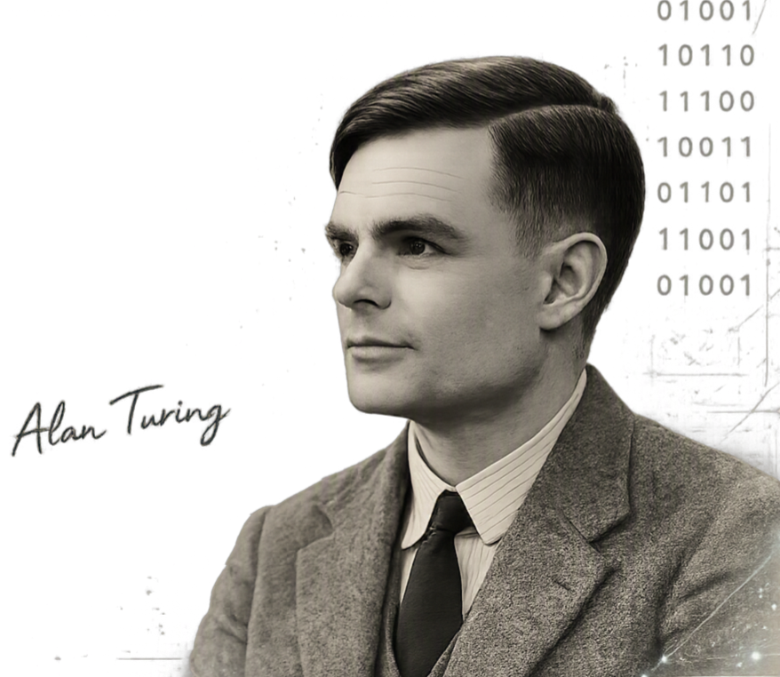
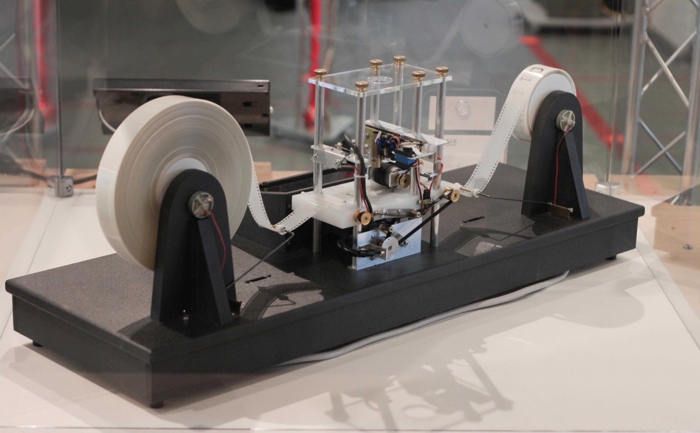
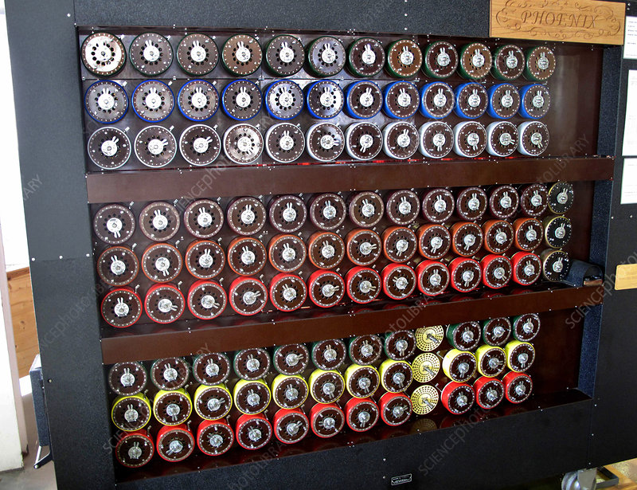
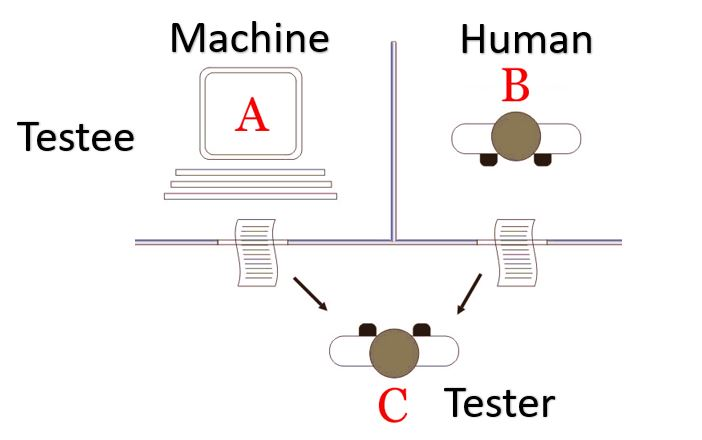
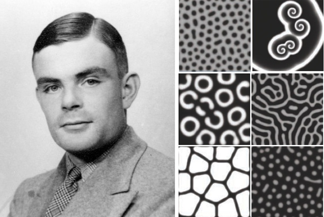

The Turing Machine
1936
a theoretical model of computation introduced by Alan Turing in his paper On Computable Numbers. Although it was never built as a physical machine, it became the foundation of modern computer science.
Learn MoreExplore the groundbreaking work and ideas of
Alan Turing that laid the foundation of modern
computer science and artificial intelligence.


1936
a theoretical model of computation introduced by Alan Turing in his paper On Computable Numbers. Although it was never built as a physical machine, it became the foundation of modern computer science.
Learn More
1945
a pioneering electronic stored-program computer designed at the UK's (NPL). While the full-scale ACE was never built, a smaller trial version, the Pilot ACE, became operational in 1950,paving the way for modern computing architecture.
Learn More
1940
a electromechanical code-breaking machine created by cryptologists in Britain during World War II to decode German messages that were encrypted using the Enigma machine.
Learn More
1950
a thought experiment proposed to evaluate if a machine can exhibit intelligent behavior indistinguishable from a human.
Learn More
1952
in "The Chemical Basis of Morphogenesis", Alan Turin proposed that biological patterns like animal spots and stripes arise through reaction-diffusion systems.
Learn More1936
Turing Machine
1940
Bombe Machine
1945
ACE
1950
Turing Test
1952
Morphogenesis
“Sometimes it is the people no one can imagine anything of who do the things no one can imagine. ― Alan Turing